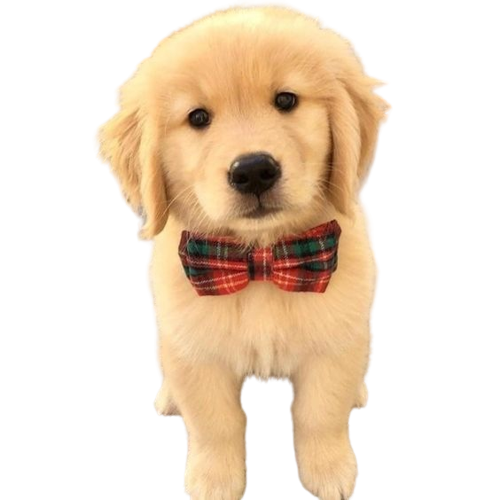

Introduction
Are you curious about the different dog breeds in the world but don't know where to start?
With so many breeds out there, it can be overwhelming to try and identify them all. But
what if there was an easy way to identify any dog breed with just a photo? Introducing our
new application that uses computer vision to identify over 300 dog breeds from photos.
Discover the amazing diversity of the canine world and expand your knowledge of man's best
friend with just a snap of a picture!
Purpose
The main purpose of this project is to deliver a web application that could identify
a dog by its breed given a good enough photo. This program could be helpful for people
looking to adopt a dog or for helping people identify a lost dog.
Implementation
In this project, we started by downloading data from Kaggle’s Dog Breed Identification
and then parsing it to work with our training models. Along with this we also did some
basic image processing. Afterward, we trained both our ResNet18 and DarkNet models with
10,222 images of dogs across 120 dog breeds. Lastly, we ran our newly made models against
10,357 new images of dogs.
Data + Pre-Existing Components
Next Steps
If we were to continue with this project we would keep trying to find better models
with higher accuracy rates. We could also make a website feature that would allow users
to upload their own images of their dogs and test them with our models. Another possibility
could be making this into an API for other websites to use.
Summary Video
Demo Video